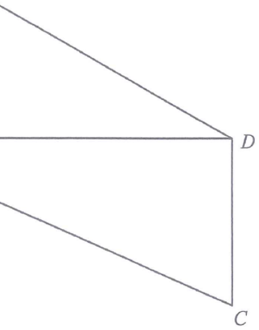

In the figure, $ABCD$ is a trapezium with $AB // DC$ and $\angle ABD = 90^\circ$.
If $AB = 18\text{ cm}$, $BC = 26\text{ cm}$ and $AD = 30\text{ cm}$,
find the area of the trapezium $ABCD$.
A. 336 cm²
B. 400 cm²
C. 504 cm²
D. 552 cm²

Figure (original exam diagram)
💡 Key idea: The diagonals $BD$ is a right-angled side of $\triangle ABD$.
Use Pythagoras twice — once in $\triangle ABD$ and once in $\triangle BCD$ — then apply the trapezium area formula.
STEP 1 · Find the height BD in ΔABD
Since $\angle ABD = 90^\circ$, $\triangle ABD$ is right-angled at $B$.
$$BD=\sqrt{AD^2-AB^2}=\sqrt{30^2-18^2}$$
$$=\sqrt{900-324}=\sqrt{576}=24\text{ cm}$$
Pythagoras Theorem\(BD=\sqrt{AD^{2}-AB^{2}}\)\(\triangle ABD\) is right-angled at \(B\), so \(BD=\sqrt{30^{2}-18^{2}}=24\text{ cm}\).
STEP 2 · Locate the second right angle
As $AB // DC$ (given), the alternate angles give:
$$\angle CDB = \angle ABD = 90^\circ$$
So $BD$ is perpendicular to both parallel sides $AB$ and $DC$ — it is the height of the trapezium.
Alternate Angles (Parallel Lines)\(AB // DC\ \Longrightarrow\ \angle CDB=\angle ABD\)The alternate angles are equal, so \(\angle CDB=90^{\circ}\) and \(BD\) is the height of the trapezium.
STEP 3 · Find the shorter parallel side CD
In the right-angled $\triangle BCD$ (right angle at $D$):
$$CD=\sqrt{BC^2-BD^2}=\sqrt{26^2-24^2}$$
$$=\sqrt{676-576}=\sqrt{100}=10\text{ cm}$$
STEP 4 · Apply the trapezium area formula
$$\text{Area}=\tfrac12\,(\text{sum of parallel sides})\times \text{height}$$
Area of a Trapezium\(A=\tfrac{1}{2}(a+b)h\)The parallel sides are \(AB=18\) and \(CD=10\) with height \(BD=24\), so the area is \(336\text{ cm}^{2}\).
ANSWER: Area of $ABCD = 336\text{ cm}^2$ → Option A
PRACTICESimilar question — try it yourself
Question. In the figure, \(\angle ABD=90^{\circ}\) and \(AB // DC\). It is given that \(AD=25\text{ cm}\), \(AB=15\text{ cm}\) and \(BC=29\text{ cm}\). Find the area of \(ABCD\).
Show the worked solution
Step 1. \(\triangle ABD\) is right-angled at \(B\), so \(BD=\sqrt{25^{2}-15^{2}}=\sqrt{625-225}=\sqrt{400}=20\text{ cm}\).
Step 2. Since \(AB // DC\), alternate angles give \(\angle CDB=\angle ABD=90^{\circ}\); thus \(BD\) is the height between the parallel sides.
Step 3. In the right-angled \(\triangle BCD\): \(CD=\sqrt{BC^{2}-BD^{2}}=\sqrt{29^{2}-20^{2}}=\sqrt{841-400}=\sqrt{441}=21\text{ cm}\).
Step 4. Area \(=\tfrac{1}{2}(AB+CD)\times BD=\tfrac{1}{2}(15+21)(20)=\tfrac{1}{2}(36)(20)=360\text{ cm}^{2}\).
Answer: area \(=360\text{ cm}^{2}\)
Height (perpendicular distance between the parallel sides) is $BD = 24$ cm.